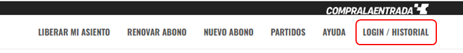
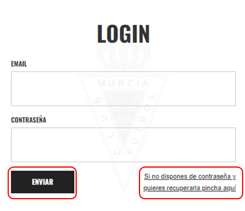

¿CÓMO ACCEDER A MI PERFIL?
En su perfil podrá acceder a los productos que ha comprado y a la gestión de plazos si es el caso.
El perfil es creado de manera automática una vez realice la compra de algún producto en la plataforma de CompraLaEntrada. Este perfil es asignado al correo electrónico usado en la compra y en caso de Inscripción de Jugador/a deberá usar el email asignado al primer responsable.
Para acceder haga lo siguiente:
-
En la parte superior derecha acceda a la pestaña de LOGIN/HISTORIAL.

-
Ingrese el email y la contraseña, luego, presione en ENVIAR; en caso de no disponer de contraseña presione en
“Si no dispones de contraseña y quieres recuperarla pincha aquí”
